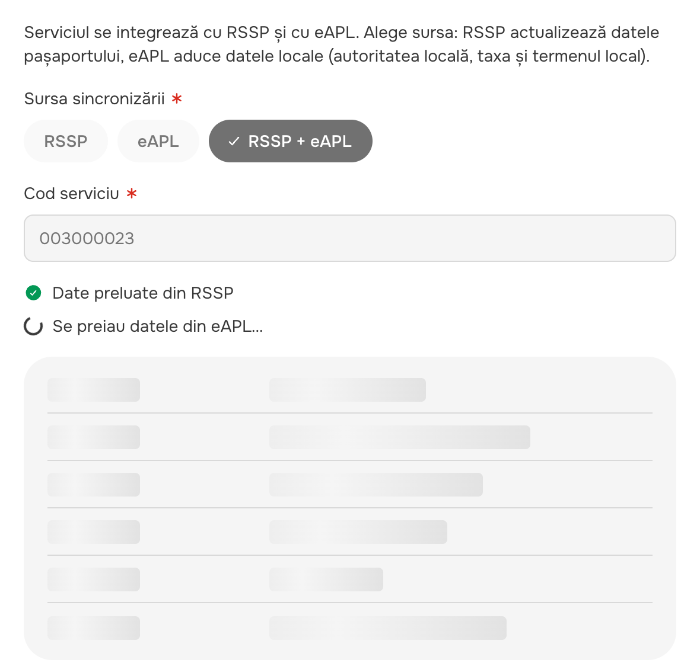
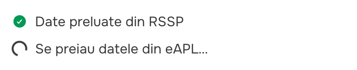

Captured from the prototype on 21 Oct 2026 (1440 desktop, 375 phone). No product UI was changed for this page. Source: component audit 2026-10-21 § 4 „Stepper / steps”.
Use the FO stepper for every wizard. Move the BO steps strip to it as its horizontal layout (it is already the same Figma step: same 24 px circle, same done / current / upcoming look). Move the sync steps to it too (see the note on card 4: they show a running job, not navigation). The Form Builder step chips are tabs, not steps. They let you pick which step to edit, in any order, with no „done” state, and they can add steps. They are not part of this decision; line them up with the library tabs / chips instead. The process path stays the trajectory. The library .progress-tracker is used nowhere in the product, so it is only a reference.
Which one should be the single stepper?
A. The FO stepper (vertical in the sidebar, the step bar on phones), plus a horizontal layout of it for drawers. Recommended.
B. The BO steps strip everywhere (horizontal only; the FO wizard would lose its sidebar list).
C. The library .progress-tracker as is (labels under the circles, no phone labels, not clickable).
And: are the Form Builder chips tabs (my reading) or steps?
Vertical list, 280 wide in the sidebar. Row = 24 px circle + label 14/20 medium, vertical connector between rows.
States: done = brand-filled circle + check, label underlined · current = brand ring, brand label, light-blue row · upcoming = grey ring · unavailable = aria-disabled. No error state.
Clickable: done / available rows, with hover. In the FO + Ghișeu the row is a span role="button" (audit S093: should be a real <button>); the builder preview already uses a button.
Phones (≤ 860): a sticky 44 px bar: step name 16/24 medium, „Pasul n din 7”, 4 px progress line. Not clickable.
BO create drawers: Clasificator nou (4 steps), Șablon de notificare nou (Setări · Destinatari · Conținut · Revizuire), Tip de solicitare nou, Tarif nou (2 steps).
Key facts
Horizontal, 57 high (padding 16/20 + bottom border). 24 px circle + label 14/20 side by side, 36 × 1.5 px line between steps.
States: done (brand fill + check, underlined label) · current (brand ring, brand 500 label, light-blue pill) · upcoming (grey ring). No error state; errors live in the footer and the fields.
Clickable: done steps are real <button>s (go back).
Vs the FO stepper
Same marker, colours and states, so it is the same design step (library .step-desktop), just horizontal.
Labels 400 (current 500) in the default colour; the FO uses 500 in the secondary colour.
No phone layout: it scrolls and hides the current step. The FO switches to the step bar.
Correct button markup (the FO still has the span).
Note: components.md maps the Figma „Stepper · drawer” to this strip, not to the FO stepper.
Form Builder (Serviciu › Formular): pick the step of the form you are editing, then „+” to add one.
Key facts
32 px pill chips, 20 px white number badge (12 px), label 14/20 medium, 8 gap; „+” add button at the end.
States: selected (black inverse pill) · default (grey pill) · locked (lock icon: generated by the platform) · error (red dot + „are erori” in the name). No done / upcoming.
Clickable: every chip, in any order; role="tablist" with arrow-key focus.
Vs the FO stepper
No progress: nothing is „done” or „upcoming”, and you can jump anywhere. That is tab behaviour, and the markup already says tab.
Different look entirely: pills, 20 badge, black selection, no connector.
It is the only one with an error state and a lock state.
4 · Sync steps
Move to the FO stepper (see note)
ul.e-permits-sync__steps (aria-live="polite")

1440 · Sincronizare serviciu, RSSP + eAPL, while it runs

375 · the two lines alone
Live: svc-01a, then choose „RSSP + eAPL” and „Sincronizează”. The loading lasts about 2 s; svc-01c = RSSP only.
Used in
„Sincronizare serviciu” modal (Configurări servicii › Sincronizare, and Profil serviciu › Resincronizează): one line per source while the data is fetched.
Key facts
Plain list, no numbers, no connector. Icon 16 (green check / red error), 20 spinner while loading, grey dot while waiting. Text 14/20 regular, secondary colour.
States: pending · loading · done · error (the only stepper-like part with an error state besides the builder).
Not clickable. It disappears when the sync ends (the result replaces it).
Vs the FO stepper
It shows a running job, not a wizard. The user cannot go to a step. The text changes with the status („Se preiau datele…” → „Date preluate”).
No circles, numbers or line; it has a spinner and an error icon.
Note: if it becomes the FO stepper, it needs a loading state and an error state that the stepper does not have today. Keeping it as a status list is also reasonable; your call.
Nowhere in the product, only in the library preview.
Key facts
Horizontal, max 996 wide. Circle 24 (desktop) / 20 (mobile), label 14/22.4 regular under the circle; mobile has no labels.
States: completed (brand fill + ✔ character, blue underlined label) · current · incomplete · blocked (uses an undefined token). The Figma „Available” state is missing.
Not clickable (plain divs).
Vs the FO stepper
Labels under the circles rather than beside them; no current-row pill; the done label is blue instead of grey.
No phone label or „Pasul n din N”; no navigation.
It is the Figma origin of both the FO stepper and the steps strip (.step-desktop vertical / horizontal).